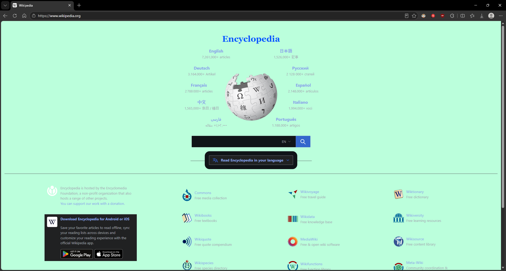

My Dev Tools Vandalism
I used browser developer tools to temporarily "vandalize" a website. Below is a screenshot showing my changes. These edits only appeared on my computer and did not affect the actual website.

What I "Vandalized"
Describe the changes you made to the website using the browser's developer tools. Some potential questions to consider:
- I edited all instances of the word "Wikipedia"
- I changed the background-color to teal.
- I made the website look generic and boring.
- Sometimes editing the color didn't appear on the website because I chose the wrong element.
- I chose the most stand out features to edit because those features are more visible to the user.
- Yes, I have a more clear understanding of how CSS and HTML work together.
- Yes, I plan to bring these skills to my Project 1.